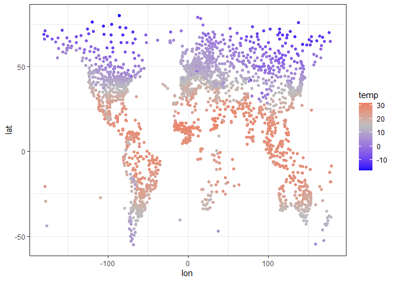
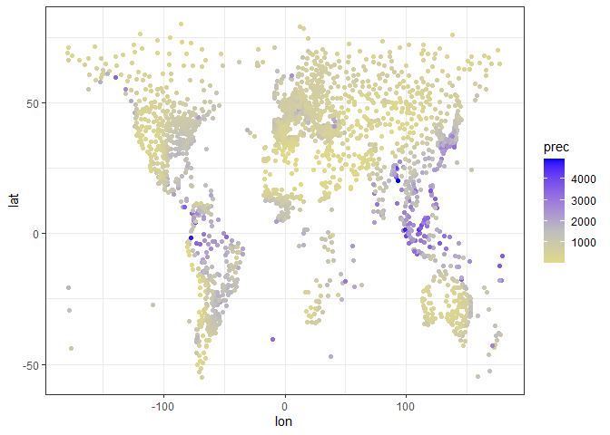
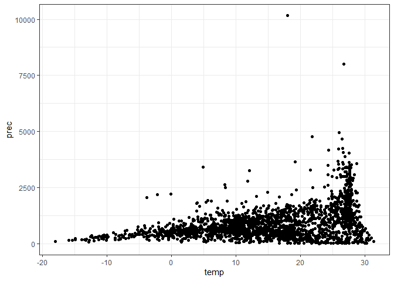
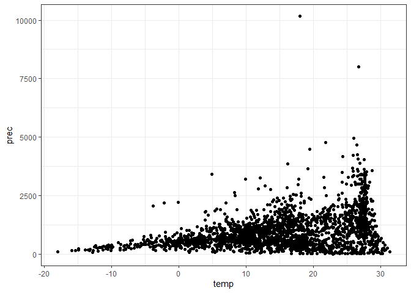
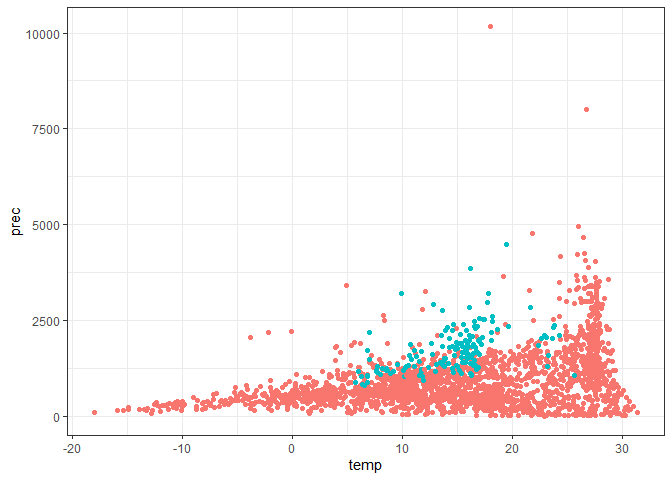

The goal of clidatajp is to provide climate data from Japan Meteorological Agency (‘JMA’). Data was downloaded from ‘JMA’ and edited. You can also download climate data from ‘JMA’. However, I strongly recommend you to use data(climate_world) and data(climate_jp) when using mean temperature and precipitation.
clidatajpは，日本の気象庁(JMA)から取得した気候データを提供することを目的に開発しました． データは，気象庁のページから取得して編集したものです． また，気象庁から新たにデータをダウンロードすることも可能です．
Installation インストール
You can install the development version of clidatajp from GitHub. You can see climate data directly from ‘JMA’ ( https://www.data.jma.go.jp/gmd/cpd/monitor/nrmlist/ ).
開発中のバージョンは，GitHubからダウンロード可能です．
https://github.com/matutosi/clidatajp).
また，clidatajpを使わずとも，手作業で気象庁から直接データをダウンロードすることもできます．
https://www.data.jma.go.jp/gmd/cpd/monitor/nrmlist/
ただし，download_climate()や手作業で新たにデータを取得するには時間がかかります． そのため，月平均気温と月間降水量については，data(climate_world) と data(climate_jp)の使用をお勧めします．
# CRAN
install.packages("clidatajp")
# development
# install.packages("devtools")
devtools::install_github("matutosi/clidatajp")Example 使用例
This is a basic example.
基本的な使い方は以下をご覧ください．
library(clidatajp)
library(magrittr)
library(dplyr)
#>
#> Attaching package: 'dplyr'
#> The following objects are masked from 'package:stats':
#>
#> filter, lag
#> The following objects are masked from 'package:base':
#>
#> intersect, setdiff, setequal, union
library(tibble)
library(ggplot2)
library(stringi)
# show station information and link
# 観測地点とそのリンクのデータ
data(station_links)
station_links %>%
dplyr::mutate("station" := stringi::stri_unescape_unicode(station))
#> # A tibble: 3,444 × 4
#> no station url conti…¹
#> <chr> <chr> <chr> <chr>
#> 1 60560 アインセフラ - アルジェリア 緯度：32.77°N 経度：0.6… https… "\\u30…
#> 2 60620 アドラル - アルジェリア 緯度：27.88°N 経度：0.18°W… https… "\\u30…
#> 3 60369 アルジェ - アルジェリア 緯度：36.77°N 経度：3.10°E… https… "\\u30…
#> 4 60360 アンナバ - アルジェリア 緯度：36.83°N 経度：7.82°E… https… "\\u30…
#> 5 60611 イナメナス - アルジェリア 緯度：28.05°N 経度：9.63… https… "\\u30…
#> 6 60640 イリジ - アルジェリア 緯度：26.50°N 経度：8.42°E … https… "\\u30…
#> 7 60690 インゲザム - アルジェリア 緯度：19.57°N 経度：5.77… https… "\\u30…
#> 8 60630 インサラー - アルジェリア 緯度：27.23°N 経度：2.50… https… "\\u30…
#> 9 60559 ウェド - アルジェリア 緯度：33.50°N 経度：6.78°E … https… "\\u30…
#> 10 60421 ウームエルブワギー - アルジェリア 緯度：35.87°N 経… https… "\\u30…
#> # … with 3,434 more rows, and abbreviated variable name ¹continent
# show climate data
# 観測データ(日本，世界)
data(japan_climate)
japan_climate %>%
dplyr::mutate_if(is.character, stringi::stri_unescape_unicode)
#> # A tibble: 3,768 × 14
#> no station month temperat…¹ preci…² snowf…³ insol…⁴ country period altit…⁵
#> <dbl> <chr> <dbl> <dbl> <dbl> <dbl> <dbl> <chr> <chr> <dbl>
#> 1 47401 稚内 1 -4.3 84.6 129 40.6 日本 1991-… 2.8
#> 2 47401 稚内 2 -4.3 60.6 105 74.7 日本 1991-… 2.8
#> 3 47401 稚内 3 -0.6 55.1 68 138. 日本 1991-… 2.8
#> 4 47401 稚内 4 4.5 50.3 9 174. 日本 1991-… 2.8
#> 5 47401 稚内 5 9.1 68.1 0 182. 日本 1991-… 2.8
#> 6 47401 稚内 6 13 65.8 NA 155. 日本 1991-… 2.8
#> 7 47401 稚内 7 17.2 101. NA 143. 日本 1991-… 2.8
#> 8 47401 稚内 8 19.5 123. NA 151. 日本 1991-… 2.8
#> 9 47401 稚内 9 17.2 137. NA 172. 日本 1991-… 2.8
#> 10 47401 稚内 10 11.3 130. 1 135. 日本 1991-… 2.8
#> # … with 3,758 more rows, 4 more variables: latitude <dbl>, longitude <dbl>,
#> # NS <chr>, WE <chr>, and abbreviated variable names ¹temperature,
#> # ²precipitation, ³snowfall, ⁴insolation, ⁵altitude
data(climate_world)
climate_world %>%
dplyr::mutate_if(is.character, stringi::stri_unescape_unicode)
#> # A tibble: 41,328 × 12
#> no continent country station month tempe…¹ preci…² latit…³ NS longi…⁴
#> <dbl> <chr> <chr> <chr> <dbl> <dbl> <dbl> <dbl> <chr> <dbl>
#> 1 60560 アフリカ アルジェ… アイン… 1 7.1 14.9 32.8 N 0.6
#> 2 60560 アフリカ アルジェ… アイン… 2 9.2 11.2 32.8 N 0.6
#> 3 60560 アフリカ アルジェ… アイン… 3 12.9 15.9 32.8 N 0.6
#> 4 60560 アフリカ アルジェ… アイン… 4 16.8 16.9 32.8 N 0.6
#> 5 60560 アフリカ アルジェ… アイン… 5 21.5 15 32.8 N 0.6
#> 6 60560 アフリカ アルジェ… アイン… 6 26.7 6.9 32.8 N 0.6
#> 7 60560 アフリカ アルジェ… アイン… 7 31 4.1 32.8 N 0.6
#> 8 60560 アフリカ アルジェ… アイン… 8 29.5 13.5 32.8 N 0.6
#> 9 60560 アフリカ アルジェ… アイン… 9 24.4 21 32.8 N 0.6
#> 10 60560 アフリカ アルジェ… アイン… 10 18.6 25.8 32.8 N 0.6
#> # … with 41,318 more rows, 2 more variables: WE <chr>, altitude <dbl>, and
#> # abbreviated variable names ¹temperature, ²precipitation, ³latitude,
#> # ⁴longitude
# download climate data
# 新たにデータを取得する場合
station_links %>%
`$`("url") %>%
`[[`(1) %>%
download_climate()
#> # A tibble: 12 × 11
#> station country latit…¹ NS longi…² WE altit…³ month tempe…⁴ preci…⁵
#> <chr> <chr> <chr> <chr> <chr> <chr> <chr> <dbl> <dbl> <dbl>
#> 1 アインセフ… アルジ… 32.77 N 0.60 W 1058 1 7.1 14.9
#> 2 アインセフ… アルジ… 32.77 N 0.60 W 1058 2 9.2 11.2
#> 3 アインセフ… アルジ… 32.77 N 0.60 W 1058 3 12.9 15.9
#> 4 アインセフ… アルジ… 32.77 N 0.60 W 1058 4 16.8 16.9
#> 5 アインセフ… アルジ… 32.77 N 0.60 W 1058 5 21.5 15
#> 6 アインセフ… アルジ… 32.77 N 0.60 W 1058 6 26.7 6.9
#> 7 アインセフ… アルジ… 32.77 N 0.60 W 1058 7 31 4.1
#> 8 アインセフ… アルジ… 32.77 N 0.60 W 1058 8 29.5 13.5
#> 9 アインセフ… アルジ… 32.77 N 0.60 W 1058 9 24.4 21
#> 10 アインセフ… アルジ… 32.77 N 0.60 W 1058 10 18.6 25.8
#> 11 アインセフ… アルジ… 32.77 N 0.60 W 1058 11 12 22.3
#> 12 アインセフ… アルジ… 32.77 N 0.60 W 1058 12 8.2 9.4
#> # … with 1 more variable: url <chr>, and abbreviated variable names ¹latitude,
#> # ²longitude, ³altitude, ⁴temperature, ⁵precipitationDetail data 詳細データ
Japan Meteorological Agency (‘JMA’) provides detail climate data (yearly, monthly, daily, hourly and 10 minutes values) for each station in Japan. A station is specified by a pair of prec_no (area) and block_no (station).
気象庁は，日本の各地点の詳細データ (年別・月別・日別・時別・10分別) を公開しています． 地点は prec_no (地域) と block_no (観測地点) の組で指定します．
# area no and station no
# 地域番号と観測地点番号
prec_no <- download_prec_no()
prec_no
block_no <- download_block_no(61)
block_no
# build url and download detail data
# url を作って詳細データを取得
url <- detail_url(prec_no = 61, block_no = 47759, item = "daily",
year = 2023, month = 6)
download_detail(url)
# 10 min values of an AMeDAS station
# アメダス地点の10分別値
detail_url(61, "0588", "10min", 2023, 6, 20) %>%
download_detail()Plot 図示
Clean up data before drawing plot.
図化前のデータ整理
climate <-
dplyr::bind_rows(climate_world, climate_jp) %>%
dplyr::mutate_if(is.character, stringi::stri_unescape_unicode) %>%
dplyr::group_by(country, station) %>%
dplyr::filter(sum(is.na(temperature), is.na(precipitation)) == 0) %>%
dplyr::filter(period != "1991-2020" | is.na(period))
climate <-
climate %>%
dplyr::summarise(temp = mean(as.numeric(temperature)), prec = sum(as.numeric(precipitation))) %>%
dplyr::left_join(dplyr::distinct(dplyr::select(climate, station:altitude))) %>%
dplyr::left_join(tibble::tibble(NS = c("S", "N"), ns = c(-1, 1))) %>%
dplyr::left_join(tibble::tibble(WE = c("W", "E"), we = c(-1, 1))) %>%
dplyr::group_by(station) %>%
dplyr::mutate(lat = latitude * ns, lon = longitude * we)
#> `summarise()` has grouped output by 'country'. You can override using the
#> `.groups` argument.
#> Adding missing grouping variables: `country`
#> Joining with `by = join_by(country, station)`
#> Warning in dplyr::left_join(., dplyr::distinct(dplyr::select(climate, station:altitude))): Each row in `x` is expected to match at most 1 row in `y`.
#> ℹ Row 1 of `x` matches multiple rows.
#> ℹ If multiple matches are expected, set `multiple = "all"` to silence this
#> warning.
#> Joining with `by = join_by(NS)`
#> Joining with `by = join_by(WE)`Draw a world map with temperature.
年平均気温を世界地図のように表示． ただし，緯度経度は単純な数値のため，正確ではない．
climate %>%
ggplot2::ggplot(aes(lon, lat, colour = temp)) +
scale_colour_gradient2(low = "blue", mid = "gray", high = "red", midpoint = 15) +
geom_point() +
theme_bw()
# ggsave("temperature.png")Draw a world map with precipitation except over 5000 mm/yr (to avoid extended legend).
年間降水量を世界地図のように表示． ただし，凡例が引きずられるのを防ぐため，5000mm/年 以上の地点は除去．
climate %>%
dplyr::filter(prec < 5000) %>%
ggplot2::ggplot(aes(lon, lat, colour = prec)) +
scale_colour_gradient2(low = "yellow", mid = "gray", high = "blue", midpoint = 1500) +
geom_point() +
theme_bw()
# ggsave("precipitation.png")Show relationships between temperature and precipitation except Japan.
気温と降水量の関係(日本は除外)
japan <- stringi::stri_unescape_unicode("\\u65e5\\u672c")
climate %>%
dplyr::filter(country != japan) %>%
ggplot2::ggplot(aes(temp, prec)) +
geom_point() +
theme_bw() +
theme(legend.position="none")
# ggsave("climate_nojp.png")Show relationships between temperature and precipitation including Japan.
気温と降水量の関係(日本を含む)
climate %>%
ggplot2::ggplot(aes(temp, prec)) +
geom_point() +
theme_bw()
# ggsave("climate_all.png")Show relationships between temperature and precipitation. Blue: Japan, red: others.
気温と降水量の関係(日本：水色，日本以外：赤色)
climate %>%
dplyr::mutate(jp = (country == japan)) %>%
ggplot2::ggplot(aes(temp, prec, colour = jp)) +
geom_point() +
theme_bw() +
theme(legend.position="none")
# ggsave("climate_compare_jp.png")Citation 引用
Toshikazu Matsumura (2022) Tools for download climate data from Japan Meteorological Agency with R. https://github.com/matutosi/clidatajp/.
松村 俊和 (2022) Rを使った気象庁からの観測データの取得ツール. https://github.com/matutosi/clidatajp/ .